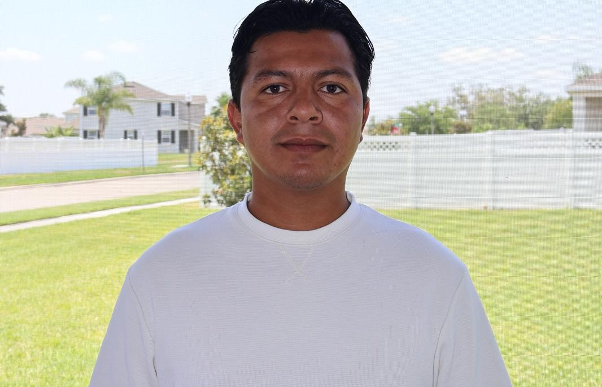

About Me
Web and Computer Programming student skilled in full-stack development (Node.js, MongoDB, OAuth) and frontend automation using Python, Selenium, and Docker. Passionate about creating clean, functional code and delivering real-world solutions.

Education
Brigham Young University - Idaho
Bachelor of Software Development (Expected 2026)
Certificate in Web and Computer Programming (Awarded Sept 2024)
Maynard Evans High School — Orlando, FL
High School Diploma (May 2016)
Project Experience
Independent Developer — Winter Garden, FL
Software & Web Projects | Dec 2022 - Present
-
Developed and deployed a clean CSS-based website for a fictional rafting company booking system.
View Site
-
Built a promotional website to boost church group participation.
View Site
-
Programmed a branching narrative text-based game using Python where players make choices leading to three different endings.
-
Created a simple, calculator-based tool for a carpentry business to manage employee pay based on square feet, and to saves dates and lot numbers for easy access.
-
Designed a web app using an API to provide weekly anime recommendations in a clean interface.
View App
- Used Docker to containerize testing environments for HTML/CSS/JS projects.
- Automated form and UI testing using Selenium; validated behavior with pytest.
- Implemented OAuth authentication in web applications to enhance security testing with API-DOCS.
-
Created a chamber of commerce website for testing purposes, implementing lazy loading, forms, and more.
View Site
-
Worked on a personal project, "Clipper," currently in testing phase.
View Repo